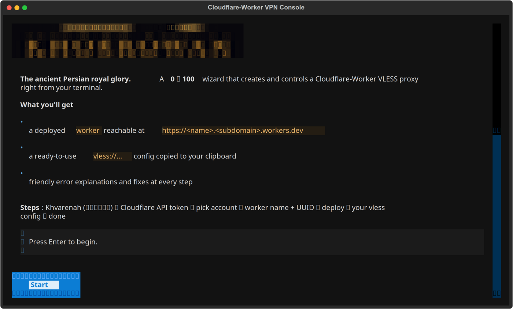
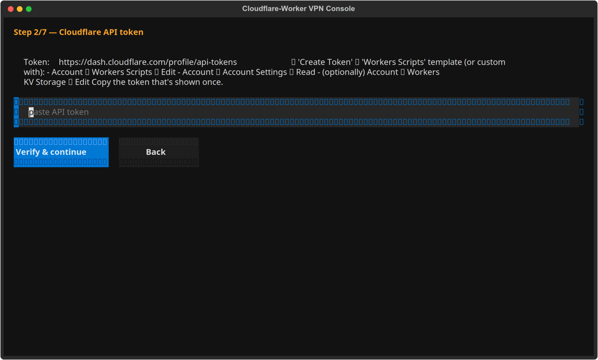
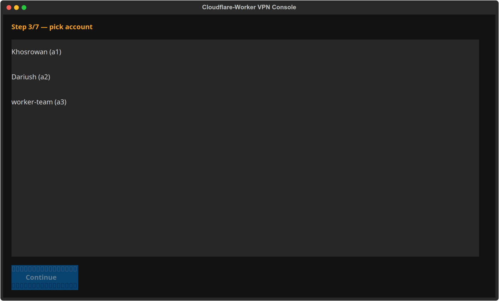
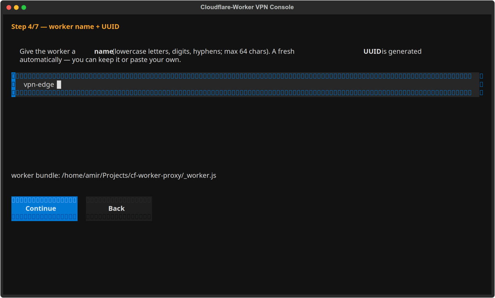
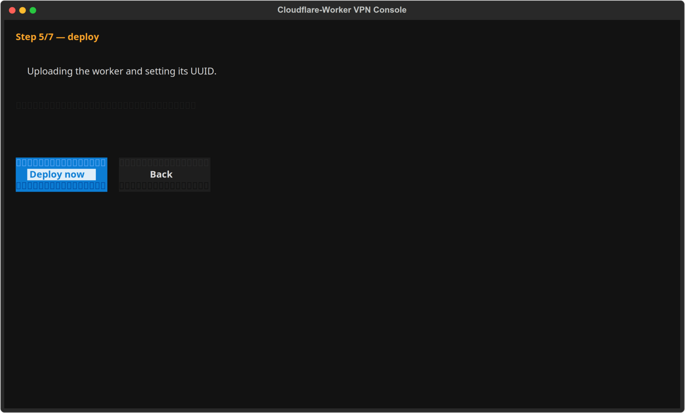
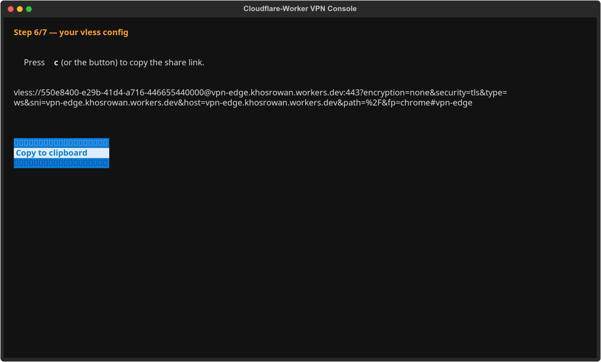
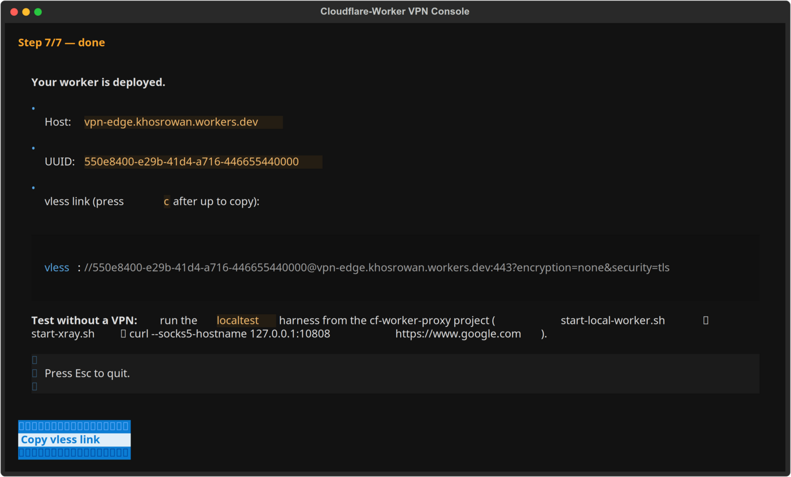

خوَرنه Khvarenah
Create and control a Cloudflare Worker VLESS VPN from zero to 100 — entirely from your terminal. Cross-platform, with friendly error explanations.
Khosrowan · khosrowan.ir · @Khosrowan_ir on Telegram

What is Khvarenah?
Khvarenah (خوَرنه) is the Avestan word for divine royal glory — the sacred inner fire that lets one rise above every barrier. That is exactly what this tool does: it gives you the glory to reach over censorship walls. It is a free, open-source terminal console built for anyone who wants a personal Cloudflare Worker VLESS proxy without wrestling with dashboards, JSON, or raw APIs.
Why Khvarenah?
🎛️ 0 → 100 wizard
Token → account → deploy → config, all in one guided terminal flow. No dashboard maze.
🧠 Error understanding
Every Cloudflare API and wrangler error becomes a plain-language problem + fix — never a raw stack trace.
🐧🪟 Cross-platform
Identical experience on Linux and Windows with native launchers, .deb and .exe.
📋 Ready-to-copy config
Get your vless:// share link + xray client JSON, copied to your clipboard.
🌐 Censored-region ready
Built-in clean-IP finder (SenPaiScanner) and a VPN-free local test harness.
🔤 Multilingual & modern UI
English / فارسی (Persian) interface with a polished, modern terminal theme.
Install in seconds
🐧 Linux — one command (no coding, no pip)
curl -fsSL https://raw.githubusercontent.com/DariushKhosrowan/cf-console/main/install.sh | bash…or download the .deb from GitHub Releases and run sudo apt install ./khvarenah_*.deb.
🪟 Windows — one click
Download khvarenah.exe from GitHub Releases and double-click it.
🐧 Advanced (developers)
git clone https://github.com/DariushKhosrowan/cf-console.git
cd cf-console
./install.sh # creates venv, installs, launches TUI
./install.sh cli --help # headless CLI🪟 Windows (developers)
git clone https://github.com/DariushKhosrowan/cf-console.git
cd cf-console
run.bat # interactive TUI
run.bat cli --help # headless CLIThe .deb and .exe bundle Python, so nothing else needs installing.
The wizard: zero → 100
- Welcome — overview of the steps.
- Token — paste your Cloudflare API token; verified live, with a permission guide.
- Account — pick the account for your worker.
- Worker — name it + generate (or paste) a UUID.
- Deploy — wrangler uploads the worker and sets the UUID. Failures are explained with a fix.
- Config — your vless:// share link appears; press
cto copy it. - Done — deployment details + local-test guidance.
Inside the terminal
Every screen of the interactive wizard — captured live from the real TUI.

Token — paste & verify your Cloudflare API token.

Account — choose the account to deploy on.

Worker — name it and generate a UUID.

Deploy — wrangler uploads your worker.

Config — your vless:// share link, copyable.

Done — deployment details + test guidance.
Headless CLI
khvarenah check [--token T] [--worker W]
khvarenah deploy [--token T] [--name N] [--uuid U] [--worker W] [--account A]
khvarenah config [--token T] [--name N] [--uuid U] [--address H] [--port P]
khvarenah status [--token T] [--account A]
khvarenah scan [--token T] [--name N] [--uuid U]